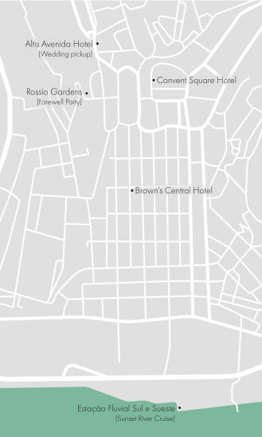
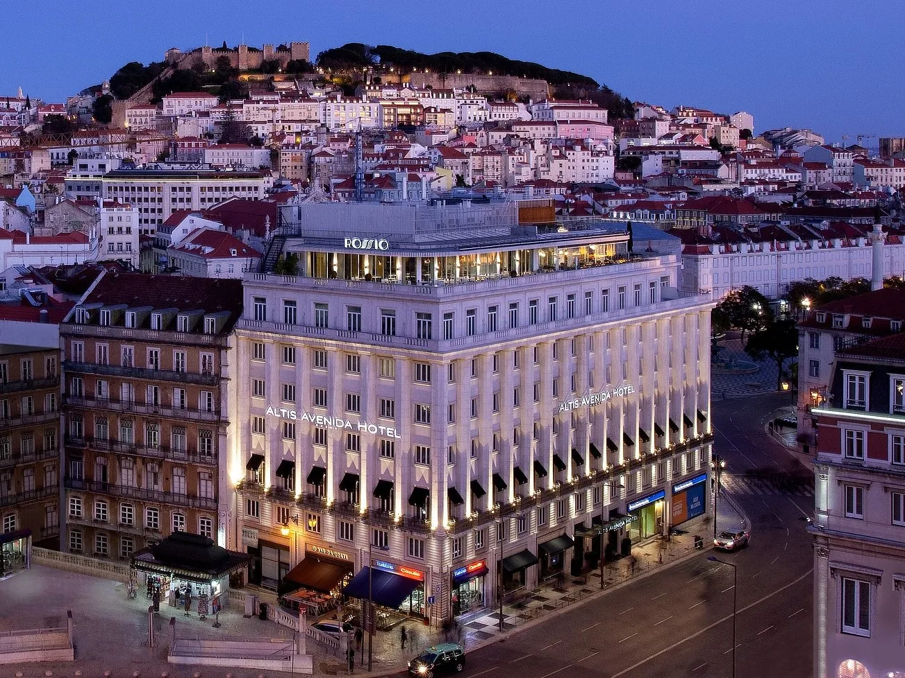
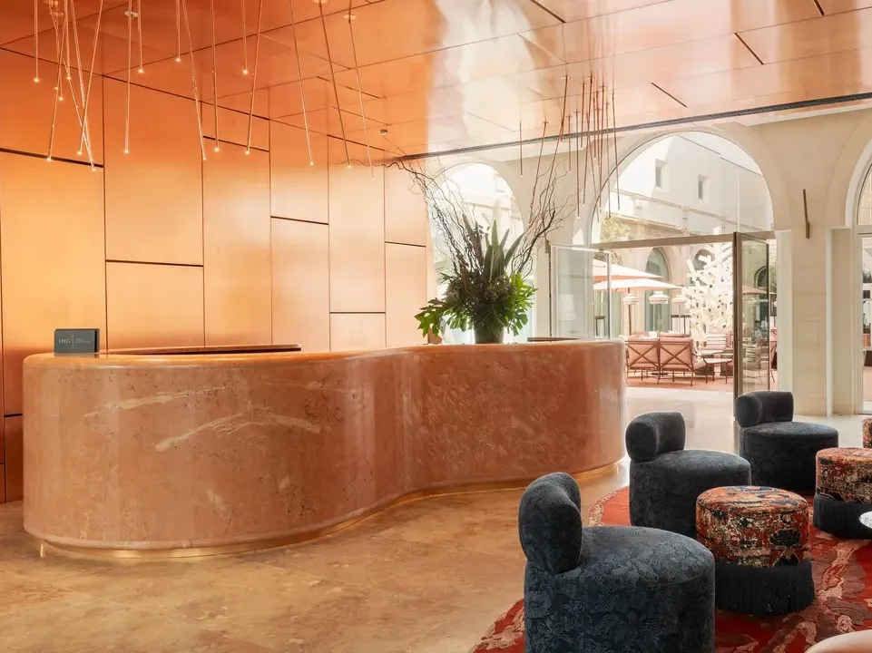
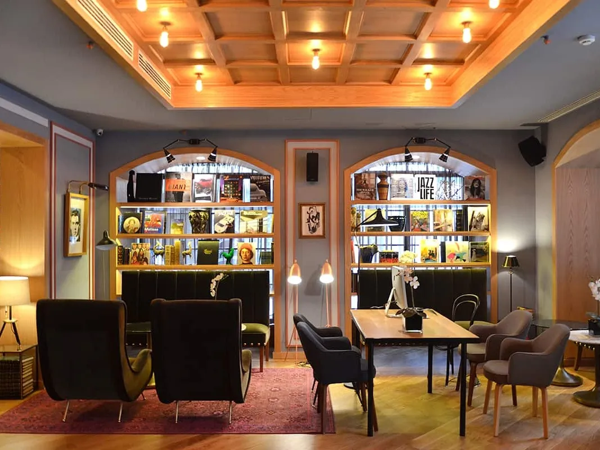

Travel
All celebrations will be held in the Lisbon area, so we recommend flying into the Lisbon airport (LIS). From the airport to the Baixa neighborhood where the hotels are located, we recommend using Uber. (It's an easy and inexpensive way to travel around the city.) The trip from the airport to the hotels generally takes under 30 minutes.
If you plan on attending the festivities (which we hope you do), we would suggest booking airfare and hotels as soon as possible. Lisbon gets busy in the summer, so it will be more expensive the longer you wait.
Lisbon / Baixa Map
Accommodations
We will be staying at the Altis Avenida Hotel. We will also be providing wedding transportation from and back to this hotel only.
We've secured a modest discount at Altis Avenida and Convent Square Hotel (a 5-minute walk away) and have recommended an additional small hotel chain. Feel free to stay where you feel most comfortable.
Altis Avenida Hotel

Rate: 15% off Room + Breakfast rate
Use Code: ALISONANDDAVID
Prices start at $300/night.
Discount code can be used from 8/4–8/12 on their site.
Walking times:
- Welcome party: 17 mins
- Wedding pickup: 0 mins
- Brunch: 2 mins
Note: The maximum capacity of most rooms is 2 adults. For those traveling with a child, the Superior rooms or Deluxe room can accommodate an extra bed for a child 12 and under (for an additional 95€ per night). For babies/toddlers 3 and under, a crib can be added free of charge. Alternatively, there are Superior and Deluxe connecting rooms.
Convent Square Lisbon

Rate: 15% off Best Available Rate
Use Code: ALISONANDDAVID
Prices start at $220/night
Discount code can be used from 8/5–8/11
Walking times:
- Welcome party: 14 mins
- Wedding pickup: 4 mins
- Brunch: 4 mins
Email reservations1@conventsquarehotel.com with the code "ALISONANDDAVID" for booking requests. You can choose a rate with or without breakfast, and non-refundable (cancellation fees apply) or flexible (can be cancelled up to 48 hours before arrival). Confirmation of bookings is subject to availability at the time of request.
Note: An extra bed may be provided in Grand rooms or Suites. If needed, request this in your email (maximum occupancy in these rooms is 3 people). Connecting rooms cannot be guaranteed.
Brown's Central Hotel
Prices start at $130/night
Brown's also has two sister hotels all in the same neighborhood, close to our wedding activities. We do not have a discount code for these hotels, but we do recommend them—they are stylish and clean boutique hotels at a reasonable rate.
Walking times:
- Welcome party: 11 mins
- Wedding pickup: 6 mins
- Brunch: 5 mins
Other Accommodation Options
Alternatively, Airbnbs and apartment rentals are plentiful in the area. We would recommend staying in the Baixa/Chiado neighborhoods as they are closest to the wedding festivities. (Please be aware that not all apartment rentals have air conditioning nor elevators in Lisbon.)